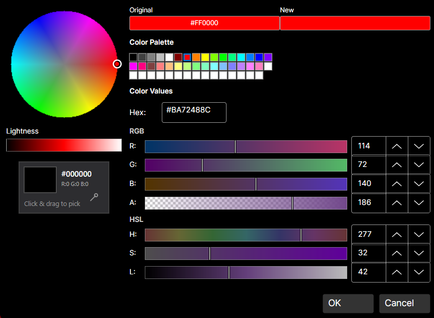

DaisyColorPickerDialog is a comprehensive color picker dialog that combines all color picker components into a single, professional interface.
| Property | Type | Default | Description |
|---|---|---|---|
Color |
Color |
Red |
The selected color |
OriginalColor |
Color |
Red |
The original color (for comparison) |
CustomColors |
ColorCollection? |
null |
Custom colors collection |
ShowAlphaChannel |
bool |
true |
Show alpha channel controls |
ShowColorWheel |
bool |
true |
Show the color wheel |
ShowColorGrid |
bool |
true |
Show the color palette grid |
ShowColorEditor |
bool |
true |
Show the RGB/HSL editor |
ShowScreenColorPicker |
bool |
true |
Show the eyedropper tool |
PreserveAlphaChannel |
bool |
false |
Preserve alpha when selecting colors |
| Event | Description |
|---|---|
PreviewColorChanged |
Fired when the selected color changes while the dialog is open (before OK is clicked) |
The dialog is a composite control that assembles several standalone color picker controls into a unified interface. Each component is a separate, reusable control with its own C# class and XAML theme:
| File | Purpose |
|---|---|
DaisyColorPickerDialog.cs |
Dialog (a FloweryDialogBase shown through FloweryDialogHost), layout, history and coordination logic |
DaisyColorWheel.cs + .xaml |
Standalone color wheel control |
DaisyColorGrid.cs + .xaml |
Standalone color palette grid |
DaisyColorEditor.cs + .xaml |
Standalone RGB/HSL editor with sliders |
DaisyColorSlider.cs + .xaml |
Standalone color channel slider |
DaisyScreenColorPicker.cs + .xaml |
Standalone eyedropper tool |
The dialog builds its UI programmatically in C# (not XAML) by creating instances of these controls and arranging them in a layout. This means:
DaisyColorPickerDialog.cs.xaml themeEach component can also be used independently outside the dialog.
The dialog integrates these components:
| Component | Purpose |
|---|---|
DaisyColorWheel |
Visual hue/saturation selection |
DaisyColorSlider |
Lightness adjustment |
DaisyColorGrid |
Palette-based color selection |
DaisyColorEditor |
Precise RGB/HSL/Hex editing |
DaisyScreenColorPicker |
Pick colors from screen |
| Color Preview | Shows selected vs. original color |
| Member | Description |
|---|---|
static ShowAsync(XamlRoot xamlRoot, Color initialColor) |
Shows the dialog over the app content; returns the selected color, or null when cancelled |
static ShowAsync(XamlRoot, Color, bool showAlphaChannel, ColorCollection? customColors) |
Same, with alpha channel option and a custom color collection to show and extend |
ShowAsync(XamlRoot xamlRoot) |
Shows a configured dialog instance |
Undo() / Redo() |
Step through the colors chosen while the dialog is open (latest 50 values); also the two history buttons in the footer |
CanUndo / CanRedo |
Whether a history step is available |
Confirm() / Cancel() |
Close with or without a result; OK also adds the color to CustomColors |
Escape and a click outside the dialog count as Cancel. Wheel, lightness slider, palette, screen picker, hex input and the RGB/HSL sliders all update the new-color preview and the returned color.
// Show the dialog and use the result
var color = await DaisyColorPickerDialog.ShowAsync(XamlRoot, currentColor);
if (color is { } selected)
{
ApplyColor(selected);
}// Keep custom colors across openings, without alpha
private readonly ColorCollection _customColors = ColorCollection.CreateCustom(16);
var color = await DaisyColorPickerDialog.ShowAsync(XamlRoot, currentColor, showAlphaChannel: false, _customColors);// Minimal dialog (wheel + editor only) with a live preview
var dialog = new DaisyColorPickerDialog
{
Color = currentColor,
OriginalColor = currentColor,
ShowColorGrid = false,
ShowScreenColorPicker = false
};
dialog.PreviewColorChanged += (s, e) => PreviewBorder.Background = new SolidColorBrush(e.Color);
var color = await dialog.ShowAsync(XamlRoot);The screen color picker is hidden on Android and iOS, where screen capture is not available.
┌─────────────────────────────────────────────────────────┐
│ ┌──────────────┐ ┌─────────────────────────────────┐ │
│ │ │ │ Color Grid (Palette) │ │
│ │ Color │ │ ████████████████████████████ │ │
│ │ Wheel │ │ ████████████████████████████ │ │
│ │ │ │ │ │
│ │ ● │ ├─────────────────────────────────┤ │
│ │ │ │ RGB Sliders │ │
│ └──────────────┘ │ R: ═══════════○═══════ [255] │ │
│ ┌──┐ │ G: ═══○═══════════════ [128] │ │
│ │L │ │ B: ○═════════════════ [0] │ │
│ │i │ ├─────────────────────────────────┤ │
│ │g │ │ HSL Sliders │ │
│ │h │ │ H: ═══════════○═══════ [180] │ │
│ │t │ │ S: ═══════════════○═══ [100] │ │
│ │ │ │ L: ═══════○═══════════ [50] │ │
│ └──┘ ├─────────────────────────────────┤ │
│ │ Hex: #FF8000 │ │
│ ┌────┬────┐ └─────────────────────────────────┘ │
│ │New │Orig│ [👁 Eyedropper] │
│ └────┴────┘ │
│ [ OK ] [ Cancel ] │
└─────────────────────────────────────────────────────────┘OriginalColor to show a comparison between old and new colors.PreviewColorChanged event for real-time preview updates in the parent UI.PreserveAlphaChannel when editing colors that should keep their transparency.ShowColorGrid="False") for a simpler interface.true when OK is clicked, false or null when cancelled.ColorCollection.This dialog and its component controls are inspired by the Cyotek ColorPicker library (MIT License).